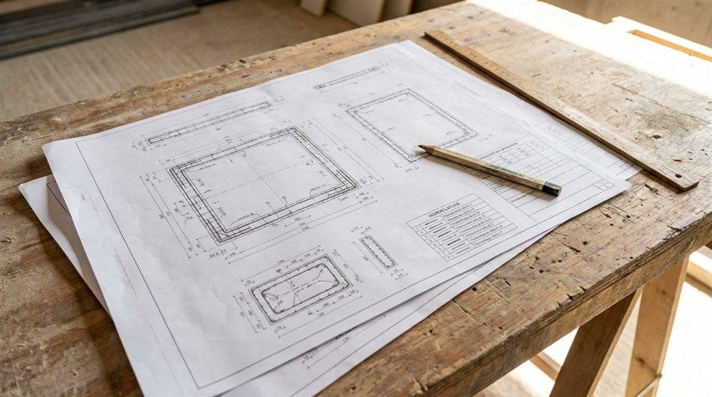
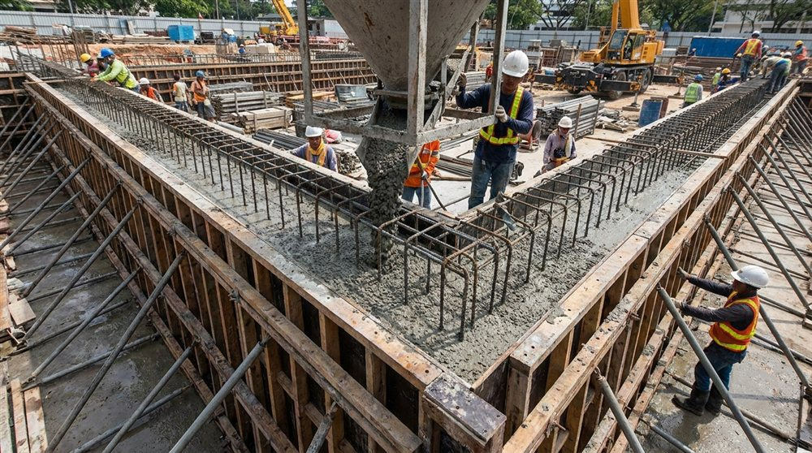

Coffrage et armatures : deux plans complémentaires
Un ouvrage en béton armé associe deux matériaux qui travaillent ensemble : le béton, qui résiste à la compression, et l'acier des armatures, qui reprend la traction. Pour réaliser correctement cet ouvrage, l'entreprise a besoin de deux familles de plans d'exécution, indissociables :
- Le plan de coffrage, qui décrit la forme et les dimensions de chaque élément en béton.
- Le plan d'armatures (ou plan de ferraillage), qui décrit les aciers à mettre en place à l'intérieur du coffrage.
L'un sans l'autre ne suffit pas : connaître la forme d'une poutre ne dit pas comment la ferrailler, et inversement. Ces plans sont produits après l'étude de structure, à partir de la note de calcul.
Un plan d'exécution n'est pas un plan d'architecte. Le plan d'architecte montre le bâtiment fini et son aspect. Le plan de coffrage et le plan d'armatures, eux, sont des documents techniques destinés au chantier : ils disent précisément quoi construire, avec quelles dimensions et quels aciers.
Ce que contient le plan de coffrage
Le plan de coffrage représente la géométrie de la structure telle qu'elle sera coulée. On y trouve notamment :
- L'implantation et les dimensions des éléments porteurs : semelles, longrines, voiles, poteaux, poutres, dalles.
- Les niveaux et épaisseurs (altimétrie des planchers, hauteur sous poutre).
- Les réservations et trémies (passages de gaines, escaliers, ascenseurs).
- Le repérage de chaque élément, qui renvoie au plan d'armatures correspondant.
C'est le plan de coffrage qui permet à l'entreprise de fabriquer les banches et les moules dans lesquels le béton sera coulé.

Ce que contient le plan d'armatures
Le plan d'armatures décrit le ferraillage à mettre en place avant le coulage. Il précise :
- Le diamètre et le nombre des aciers, leur position dans la section.
- L'espacement des cadres et étriers, qui assurent la tenue de l'ensemble.
- Les longueurs de recouvrement et d'ancrage entre barres.
- L'enrobage, c'est-à-dire l'épaisseur de béton qui protège les aciers de la corrosion, fixée selon la classe d'exposition.
- La nomenclature (ou cadre de façonnage) qui liste et quantifie chaque barre.
Ces dispositions ne sont pas arbitraires : elles découlent du dimensionnement réalisé selon l'Eurocode 2 (NF EN 1992), la norme de calcul du béton armé.
Coffrage ou armatures : qui dit quoi ?
Les deux plans sont complémentaires. Le tableau ci-dessous résume leur rôle respectif.
| Information | Plan de coffrage | Plan d'armatures |
|---|---|---|
| Dimensions et géométrie | Oui | Pour mémoire |
| Réservations et trémies | Oui | Non |
| Diamètre et position des aciers | Non | Oui |
| Cadres, recouvrements, enrobage | Non | Oui |
| Nomenclature des aciers | Non | Oui |
Pourquoi ces plans sont indispensables avant de couler
Bétonner sans plans d'exécution complets, c'est prendre un risque que rien ne rattrapera ensuite. Plusieurs raisons l'imposent :
- L'irréversibilité du béton : un ferraillage oublié ou mal placé reste prisonnier de l'ouvrage. La reprise est coûteuse, parfois impossible.
- La sécurité : un sous-dimensionnement des aciers ou un enrobage insuffisant compromet la solidité et la durabilité.
- La conformité : le bureau de contrôle exige ces plans et la note de calcul pour valider l'ouvrage ; l'assurance décennale s'appuie sur leur existence.
- La coordination de chantier : ferrailleurs, coffreurs et conducteurs de travaux travaillent à partir des mêmes documents, sans interprétation.
« On verra sur place » coûte cher. Improviser le ferraillage au moment du coulage conduit aux erreurs les plus fréquentes : aciers mal positionnés, enrobage non respecté, recouvrements insuffisants. Un plan d'armatures clair évite ces reprises et sécurise le délai.

De la note de calcul aux plans d'exécution
Les plans de coffrage et d'armatures ne sortent pas de nulle part. Ils sont l'aboutissement d'une chaîne logique : à partir des plans d'architecte et de l'étude de sol, le bureau d'études réalise la descente de charges et le dimensionnement de chaque élément, consignés dans la note de calcul. Ce sont ces résultats qui fixent les sections de béton et les quantités d'acier, puis se traduisent en plans directement exploitables sur le chantier.
Établir ces documents demande à la fois la maîtrise du calcul (Eurocode 2) et celle du dessin d'exécution. C'est le cœur du métier d'un bureau d'études structure.
Comment MH Structure vous accompagne
MH Structure produit l'ensemble de la chaîne, de l'étude aux plans prêts pour le chantier, partout en France :
- Notes de calcul béton armé selon l'Eurocode 2.
- Plans de coffrage cotés et repérés.
- Plans d'armatures avec nomenclature et cadres de façonnage.
- Coordination avec votre architecte, votre entreprise et le bureau de contrôle.
Un projet à bétonner bientôt ? Transmettez-nous vos plans d'architecte et votre étude de sol : nous établissons la note de calcul et les plans de coffrage et d'armatures dans les délais du chantier. Devis gratuit sous 48h.
Illustrations : visuels générés par intelligence artificielle pour MH Structure.